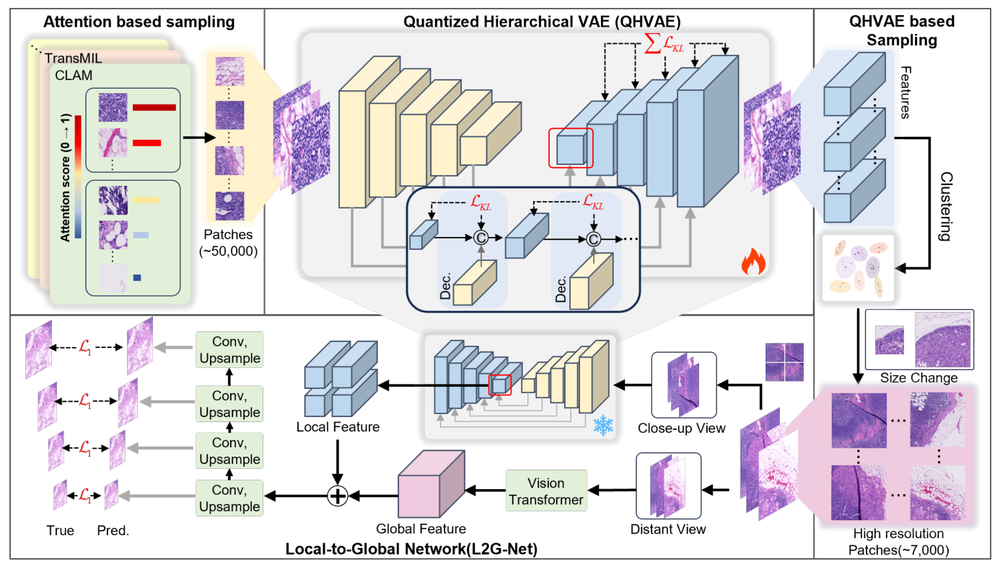

Accepted by PRCV · arXiv
Gigapixel WSIs contain sparse diagnostic regions, so dense high-resolution sampling is computationally prohibitive. Low-resolution patches and frozen pretrained encoders, however, lose morphology that downstream MIL needs. CDSR shows that a compact set of informative high-resolution regions is enough to reconstruct a slide-level representation.

A two-stage sampler first selects a small number of diverse, informative high-resolution patches from each slide. A Local-to-Global Network then encodes fine-grained morphology together with a broader tissue context and reconstructs a spatially coherent WSI representation compatible with standard MIL aggregators.